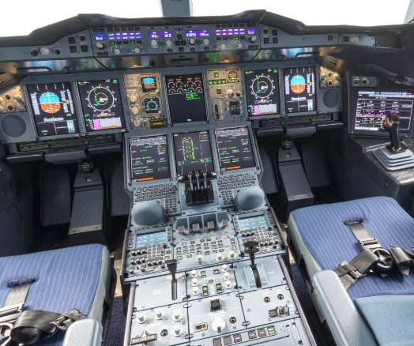

YF-23
1. Cel i zakres realizowanego projektu
Celem realizowanego przez nas projektu jest stworzenie interaktywnego kokpitu samolotu YF-23. Użytkownik posiadad dostęp do kokpitu za pośrednictwem przeglądarki intentowej. Po kliknięciu w wybrany panel kokpitu użytkownik zostanie przekierowany do strony zawierającej szczegółowe informacje na temat wybranego elementu.2. Analiza rynku
Istnieje wiele stron internetowych udostępniających informacje na temat kokpitów samolotów w zwizualizowany sposób. Pozwalają one na zapoznanie się z tematyką lotnictwa i poznanie skomplikowanego oprzyrządowania. Aplikacje te nie pozwalają jednak na symulację żadnych z elementów kokpitu. Strony te przedstawiają informacje o elementach kokpitu samolotów w przejrzysty i usystematyzowany sposób.Dostępne strony:
-
Xflight.de
Strona stworzona przez pasjonata który dokumentował w niej proces tworzenia kokpitu samolotu F-16. Zawiera szczegółowe informacje o częściach kokpitu, zdjęcia elementów, oraz graficzną wizualizację kokpitu, która pozwala na łatwe przeglądanie treści.
-
Airbus.com
Na stronie wiodącego producenta samolotów pasażerskich możemy znaleźć szczegółowe informacje na temat samolotów oraz wizualizację kokpitów w formie zdjęcia panoramicznego 360, dzięki czemu możemy zajrzeć do środka samolotu i zobaczyć jak naprawdę wygląda kokpit samolotu pasażerskiego. Brak jakiejkolwiek interakcji czy informacji szczegółowych dotyczących elementów kokpitu.

3. Diagram klas
4. Wybór typu procesu wytwórczego
Zastosowany został model spiralny ponieważ doskonale dopasowuje się do naszego typu pracy. Model spiralny zakłada kilka cykli przechodzenia przez fazy projektu. Po planowaniu i analizie bada się ryzyko, następnie konstruuje rozwiązanie i przedstawia klientowi do oceny. W tym ostatnim etapie klient zgłasza uwagi, które stają się podstawą do rozpoczęcia kolejnego cyklu i lepszego dopasowania rozwiązania do jego potrzeb.5. Wymagania funkcjonalne
- Wizualizacja kokpitu
- Możliwość zaglądania do wybranych punktów kokpitu
- Po wybraniu elementu kokpitu wyświetlenie jego opisu
- Wizualizacja działania wybranych elementów
- Możliwość dokładania bloczków z opisem przy wykorzystaniu pliku JSON
6. Wymagania niefunkcjonalne
- Podgląd do projektu przez przegląrkę internetową
- System powinien reagować w krótkim odstępie czasu
- System powinien być dostepny 24/7
- Strona dostępna w języku polskim
7. Wykorzystane technologie
- Hipertekstowy język znaczników - HTML
- Język służący do opisu formy prezentacji stron WWW - CSS
- Skryptowy język programowania - JavaScript
- Lekki format wymiany danych komputerowych - JSON
- Rozproszony system kontroli wersji - GIT
Zdecydowaliśmy się na powyższe technologie ze względu na to, że są darmowe oraz posiadamy doświadczenie w tworzeniu oprogramoawania z ich pomocą